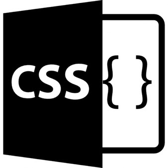

- Pour plus d'information sur le langage Python
- Pour plus d'information sur les textes défilant
- TPWeb les listes
- TPWebv2 avec span qui permet disolé un élément et padding pour gérer les marges en css
- TP DevWebex2
-
Introduction
A l'origine, les présentes notes ont été rédigées à l'intention des élèves qui suivent le cours Programmation et langages de l'option Sciences et informatique au 3e degré de transition de l'enseignement secondaire belge. Il s'agit d'un texte expérimental qui s'inspire largement de plusieurs autres documents publiés sous licence libre sur l'internet. Nous proposons dans ces notes une démarche d'apprentissage non linéaire qui est très certainement critiquable. Nous sommes conscients qu'elle apparaîtra un peu chaotique aux yeux de certains puristes, mais nous l'avons voulue ainsi parce que nous sommes convaincus qu'il existe de nombreuses manières d'apprendre (pas seulement la programmation, d'ailleurs), et qu'il faut accepter d'emblée ce fait établi que des individus différents n'assimilent pas les mêmes concepts dans le même ordre. Nous avons donc cherché avant tout à susciter l'intérêt et à ouvrir un maximum de portes, en nous efforçant tout de même de respecter les principes directeurs suivants : L'apprentissage que nous visons doit être adapté au niveau de compréhension et aux connaissances générales d'un élève moyen. Nous nous refusons d'élaborer un cours qui soit réservé à une « élite » de petits génies. Dans la même optique, notre ambition reste généraliste : nous voulons mettre en évidence les invariants de la programmation et de l'informatique, sans poursuivre une spécialisation quelconque.
-
Langage machine, langage de programmation
A strictement parler, un ordinateur n'est rien d'autre qu'une machine effectuant des opérations simples sur des séquences de signaux électriques, lesquels sont conditionnés de manière à ne pouvoir prendre que deux états seulement (par exemple un potentiel électrique maximum ou minimum). Ces séquences de signaux obéissent à une logique du type « tout ou rien » et peuvent donc être considérés conventionnellement comme des suites de nombres ne prenant jamais que les deux valeurs 0 et 1. Un système numérique ainsi limité à deux chiffres est appelé système binaire.
-
Conclusions et perspectives :
Cette application vous a été présentée dans un but didactique. Nous y avons délibérément simplifié un certain nombre de problèmes. Par exemple, si vous testez vous-même ces logiciels, vous constaterez que les messages échangés sont souvent rassemblés en « paquets », ce qui nécessiterait d'affiner les algorithmes mis en place pour les interpréter. De même, nous avons à peine esquissé le mécanisme fondamental du jeu : répartition des joueurs dans les deux camps, destruction des canons touchés, obstacles divers, etc. Il vous reste bien des pistes à explorer.
|
|
|
|
|
 |
 |